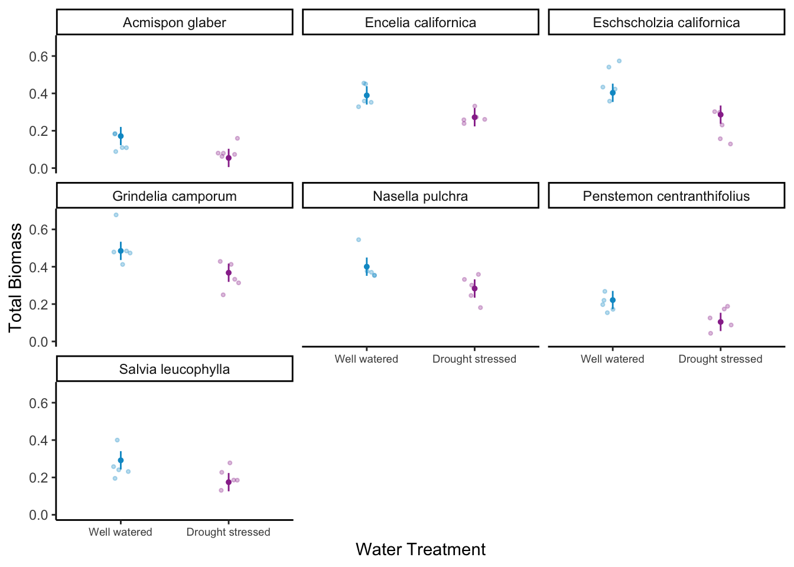

library(tidyverse) # clean data
library(readxl) # read in excel file
library(here) # find file
library(janitor) # clean data
library(GGally) # data visualization
library(MuMIn) # model selection
library(ggeffects) # model predictions
library(gtsummary) # summary tables
library(flextable) # flex tables
library(modelsummary) # model tables
drought_exp <- read_xlsx(path = here("data", # reading in data
"Valliere_etal_EcoApps_Data.xlsx"),
sheet = "First Harvest")Homework 3
https://github.com/rebecca-jane-gullette/Gullette-RebeccaJane_homework-03.git
Read in Packages and Data
Problem 1
a. Code and annotations
drought_exp_clean <- drought_exp %>% # cleaning data
clean_names() %>% # changing column names
mutate(species_name = case_when( # adding column for species scientific names
species == "ENCCAL" ~ "Encelia californica", # bush sunflower
species == "ESCCAL" ~ "Eschscholzia californica", # California poppy
species == "PENCEN" ~ "Penstemon centranthifolius", # Scarlet bugler
species == "GRICAM" ~ "Grindelia camporum", # great valley gumweed
species == "SALLEU" ~ "Salvia leucophylla", # Purple sage
species == "STIPUL" ~ "Nasella pulchra", # Purple needlegrass
species == "LOTSCO" ~ "Acmispon glaber" # deerweed
)) %>%
relocate(species_name, .after = species) %>% # move species_name column after species
mutate(water_treatment = case_when( # adding column with full treatment names
water == "WW" ~ "Well watered",
water == "DS" ~ "Drought stressed"
)) %>%
relocate(water_treatment, .after = water) # moving water_treatment column after water
# models from workshop
model0 <- lm(total_g ~ 1, # formula null model
data = drought_exp_clean) # data frame
model1 <- lm(total_g ~ sla + water_treatment + species_name, # saturated model
data = drought_exp_clean)
model2 <- lm(total_g ~ sla + water_treatment, # total biomass as a function of SLA and water treatment
data = drought_exp_clean)
model3 <- lm(total_g ~ sla + species_name, # total biomass as a function of SLA and species
data = drought_exp_clean)
# additional model
model4 <- lm(total_g ~ water_treatment + species_name, # total biomass as a function of water treatment and species
data = drought_exp_clean)
model_table <- modelsummary::modelsummary( # create a table summarizing the models
list( # selecting the models to include
"Null Model: No Predictors" = model0, # changing model names to indicate predictors
"Model 1: All Predictors" = model1,
"Model 2: SLA and Water Treatment" = model2,
"Model 3: SLA and Species" = model3,
"Model 4: Water Treatment and Species" = model4
))Table 1. Comparison of Five Models of Total Biomass and Three Predictors: Specific Leaf Area, Water Treatment, and Species.
model_table # display table of models| Null Model: No Predictors | Model 1: All Predictors | Model 2: SLA and Water Treatment | Model 3: SLA and Species | Model 4: Water Treatment and Species | |
|---|---|---|---|---|---|
| (Intercept) | 0.279 | 0.080 | 0.047 | -0.033 | 0.055 |
| (0.017) | (0.056) | (0.054) | (0.067) | (0.025) | |
| sla | 0.000 | 0.001 | 0.001 | ||
| (0.000) | (0.000) | (0.001) | |||
| water_treatmentWell watered | 0.122 | 0.090 | 0.117 | ||
| (0.020) | (0.029) | (0.017) | |||
| species_nameEncelia californica | 0.238 | 0.115 | 0.218 | ||
| (0.051) | (0.059) | (0.032) | |||
| species_nameEschscholzia californica | 0.234 | 0.222 | 0.232 | ||
| (0.033) | (0.041) | (0.032) | |||
| species_nameGrindelia camporum | 0.330 | 0.226 | 0.313 | ||
| (0.047) | (0.054) | (0.032) | |||
| species_nameNasella pulchra | 0.241 | 0.168 | 0.229 | ||
| (0.040) | (0.048) | (0.032) | |||
| species_namePenstemon centranthifolius | 0.061 | -0.006 | 0.050 | ||
| (0.039) | (0.047) | (0.032) | |||
| species_nameSalvia leucophylla | 0.117 | 0.139 | 0.120 | ||
| (0.033) | (0.041) | (0.032) | |||
| Num.Obs. | 70 | 70 | 70 | 70 | 70 |
| R2 | 0.000 | 0.755 | 0.303 | 0.610 | 0.754 |
| R2 Adj. | 0.000 | 0.722 | 0.282 | 0.566 | 0.726 |
| AIC | -75.2 | -157.5 | -96.4 | -127.1 | -159.2 |
| BIC | -70.7 | -135.0 | -87.4 | -106.8 | -139.0 |
| Log.Lik. | 39.580 | 88.741 | 52.220 | 72.538 | 88.598 |
| RMSE | 0.14 | 0.07 | 0.11 | 0.09 | 0.07 |
b. Write a 5-6 sentence “statistical methods” section.
To examine the influence of specific leaf area (SLA), water treatment, and species on the total biomass of plants in California I created 5 linear models with different combinations of predictor variables. The null model had no predictors, model 1 included all predictors, model 2 looked at SLA and water treatment, model 3 looked at SLA and species, and model 4 looked at the effect of water treatment and species on total biomass. To determine the model that best predicts total biomass I used the model.sel() function from the MuMin package which calculated the lowest AIC and a delta of 0 for Model 4. Before concluding that this was the final model I evaluated it for the assumptions of a linear model using the diagnostic plots and the residuals follow a linear pattern on the QQ plot and the residuals are homoscedastic and normally distributed.
c. Make a visualization of the model predictions with underlying data for your “best” model.
model_preds4 <- ggpredict(model4, # create data frame with model predictions
terms = c("water_treatment",
"species_name"))
model_preds4_for_plotting <- model_preds4 %>% # creating new data frame of model predictions to plot
rename(water_treatment = x, # renaming columns to be easier to work with
species_name = group)
ggplot() + # creating a plot
geom_point(data = drought_exp_clean, # plotting underlying data
aes(x = water_treatment,
y = total_g,
color = water_treatment), # creating different colors for water treatment
position = position_jitter(width = 0.1, height = 0), # jittering points
size = 0.8,
alpha = 0.3) + # making underlying data transparent
geom_pointrange(data = model_preds4_for_plotting, # adding model predictions
aes(x = water_treatment,
y = predicted,
ymin = conf.low, # adding confidence interval
ymax = conf.high,
color = water_treatment),
size = 0.1) +
labs(x = "Water Treatment", y = "Total Biomass") + # labeling axes
theme_classic() + # changing to cleaner theme
theme(axis.text.x = element_text(size = 7), # making text smaller to prevent labels from overlaping
legend.position = "none") + # getting rid of legend
scale_color_manual(values = c("Well watered" = "deepskyblue3", "Drought stressed" = "#993399")) + # changing from default colors
facet_wrap(~species_name) # creating different panels for species
d. Write a caption for your visualization.
Figure 1. Total Biomass of 7 native California plant species under different water treatments. Each plot compares the total biomass of a plant species when they are well watered versus drought stressed. Blue indicates well watered and purple indicates drought stressed. Each plot displays the average biomass and a 95% confidence interval. Data Source: Valliere J, Zhang J, Sharifi M, Rundel P (2019) Can we condition native plants to increase drought tolerance and improve restoration success? https://doi.org/10.5061/dryad.v0861f7.
e. Write a 3-4 sentence results section.
Based on model predictions, the predictors that “best” described total mass were water treatment and species (AIC = -159.2, delta = 0, Rsquared = 0.754). Between water treatments, on average, across species plants had a larger total biomass in well watered treatments (0.117 ± 0.017 g), compared to drought stressed plants. Across water treatments, on average, Gindelia camporum (great valley gumweed) had the largest total biomass (0.313 ± 0.032 g) and Acmispon glaber (deerweed) had the smallest total biomass.
Problem 2. Affective visualization
a. Describe in words what an affective visualization could look like for your personal data (3-5 sentences)
Since my data is about crocheting, I want to make icons of the projects that I’ve completed. I could do them in different sizes relative to the time I spent on each with a border indicating pattern type and difficulty, and highlighted according to type of yarn. I would like to organize them chronologically and have an additional icon indicating the day of the week and time of day I crochet the most.
b. Create a sketch (on paper) of your idea.

c. Make a draft of your visualization.


d. Write an artist statement.
I was very inspired by Stefanie Posavec and Giorgia Lupi’s Dear Data project and wanted to do a similar collage-type representation with icons, shapes, colors, and borders representing my data. For my visualization I used my iPad to create a drawing in Procreate with icons for each project I completed this quarter. This visualization shows how much time I spent on each project (size), what kind of yarn I used (highlight color), pattern (border), and pattern level (shape). Additionally I wanted to represent my crocheting habits throughout the week so I added the days of the week, with size representing average time spent per day and a sun icon indicating the time of day that I tended to crochet. I drew it all by hand and tried to represent the stitches and colors that I used for each project.
Problem 3. Statistical critique
a. Revisit and summarize
The authors used 3 Kruskal Wallis Tests and one U Test to address their main research question, is illegal fishing occurring in this Brazilian MPA and if so, when? The Kruskal Wallis Tests analyze average fishing vessel detections on three different temporal scales: by year, month, and quarterly. Additionally, they performed a U test to add an additional comparison of fishing vessel detections to lobster fishing season.
b. Visual clarity
The authors visually represented their data very clearly, everything is appropriately titled and labeled. I think that the temporal scale on the x axis and fishing detection on the y-axis is not only logical but very easy to read an understand. The charts all communicate the same message - the average fishing vessel detections and the different comparisons they use are very clear in the charts. They represent the data using box and whisker plots, so mean and standard error are included, although, the underlying data isn’t included but they did add in the outliers.
c. Aesthetic clarity
There is little to no “visual clutter” in this visualization. I think there is a high data:ink ratio because there are very few, if any, aesthetic elements and all of the elements included are relevant data, labels, or statistical tests.
d. Recommendations
I don’t think there is anything that I would recommend taking out, if anything, they could have added some color to make it more visually engaging as it is quite a mundane representation. While it is clear that the plots represent different temporal scales, a different color for each chart would make this difference apparent at first glance. I think adding the underlying data very transparently would provide a bit more context particularly to the Lobster Fishing Season plot as there a quite a few outliers. Since they list their p-value on the plot I think there should be some indication of the significance level either as an asterisk on the charts or in the caption.